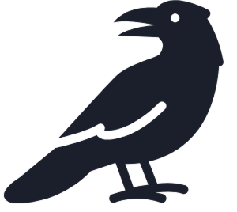
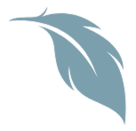
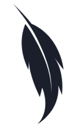

Crows know value — so do we.
At CurioCrow, our goal is to create a trusted and engaging space for coin collectors of all experience levels.
Whether you're just starting out or have been collecting for years, we’re building a platform where you can buy & sell coins and dive into the community with fellow collectors – all in one place.

We’re a team of three university students who share a passion for collecting shiny things – much like Crows.
What started as a personal hobby quickly turned into an idea we wanted to share with others – so we created CurioCrow.
Now, we’re turning that passion into a platform that brings the coin-collecting community together.



We believe collecting should be safe and secure. That’s why we’re building community-driven tools and verified listings you can rely on.
Coins are more than metal — they’re pieces of history, culture, and craftsmanship. We want to spark curiosity and help people learn through their collections.
The best part of collecting is sharing it. CurioCrow is made for and by the collecting community.

From our range of coin collectables and from trusted collectors in our community
To expand CurioCrow’s treasury, and help give fellow collectors a mint they have been dying for!
With other collectors, share stories, and explore the world of numismatics
Whether you're here to build a collection, learn something new, or pass on a prized piece
- CurioCrow is your starting point.